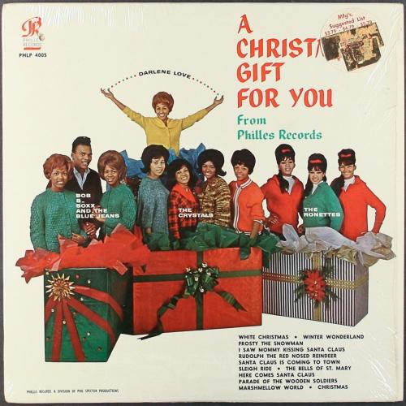

Christmas (Baby Please Come Home)
07 Dec 2020 · 3 min read

Phil Spector released his magnum opus in the 1963 holiday season. Titled A Christmas Gift for You from Philles Records, it’s hard to overstate the extent of Spector’s ambition and accomplishment on this album. Understand that this was just before the Beatles conquered American airwaves, and came at a point when Spector was being condemned by old-guard members of the entertainment industry as a “sharpie poisoning American culture.” It was also a time when the industry was dominated by singles, and long-playing albums were often filled with hastily-recorded second-rate material.
Spector was the producer on the album and used a variety of different vocal artists, all backed by a group of musicians who became informally known as The Wrecking Crew.
The bulk of the tracks were renditions of secular holiday traditional tunes already part of the culture – but completely transformed by Spector and his recording artists into an amazingly consistent series of recordings exhibiting Spector’s famed “wall of sound,” blending innumerable instrumental tracks and voices into a single monolithic sound.
All of these traditional tunes led up to the album’s grand finale, an original composition sung by Darlene Love, titled “Christmas (Baby Please Come Home).”
It’s hard to really get a sense of the full dramatic sweep of the song just looking at the lyrics but, for what it’s worth, here they are.
The snow’s coming down.
I’m watching it fall.
Lots of people around.
Baby please come home.The church bells in town
All ringing in song.
What a happy sound.
Baby please come home.They’re singing “Deck The Halls,”
But it’s not like Christmas at all,
As I remember when you were here,
And all the fun we had last year.Pretty lights on the tree:
I’m watching them shine.
You should be here with me.
Baby please come home.They’re singing “Deck The Halls,”
But it’s not like Christmas at all,
Cause I remember when you were here,
And all the fun we had last year.If there was a way,
I’d hold back this tear,
But it’s Christmas day:Please
Please
Please
Please
Baby please come home!
Just reading through the lyrics, it’s easy to mistake this as just a somewhat simpler version of the song “Please Come Home for Christmas.”
However Spector and The Wrecking Crew’s instrumental backing, as well as Darlene Love’s singing, and the backing vocals, add a whole different dimension to the song. As performed in this recording, the singer’s loss, her sadness, and her struggle to fully express her feelings take on epic proportions.
I’ve written more fully about this recording at Reason to Rock, and feel free to read my more in-depth analysis on that site.
Much like Frank Capra’s classic holiday film, It’s A Wonderful Life, Spector’s magnificent work fared poorly in the year of its initial release. Over time, though, just as with Capra’s film, the work found an increasingly appreciative audience. The album was reissued on The Beatles’ Apple label in 1972. The album has since been recognized by placement on multiple lists, not just of the best holiday albums of all time, but as simply one of the best albums of any kind ever recorded. And Darlene Love performed “Christmas (Baby Please Come Home)” for David Letterman, on his final show before Christmas, for a total of 28 years.
The song has since been covered by many different artists, but accept no substitutes, and resist all temptations to listen to anything other than the original.
Next: “Holiday in Harlem”
Or see the complete list of Christmas Favorites from The Practical Utopian.
Thanks for reading! You can also generally follow my work on Medium and Buttondown.
If you’d like a convenient short URL to link to this piece, you can use pract.org/cbpch.html. Or feel free to simply share this piece using one of the social media buttons below!